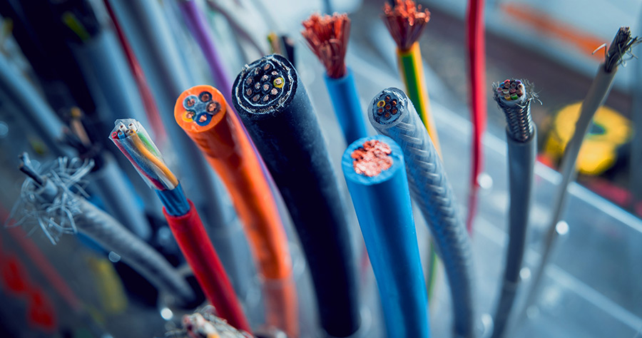
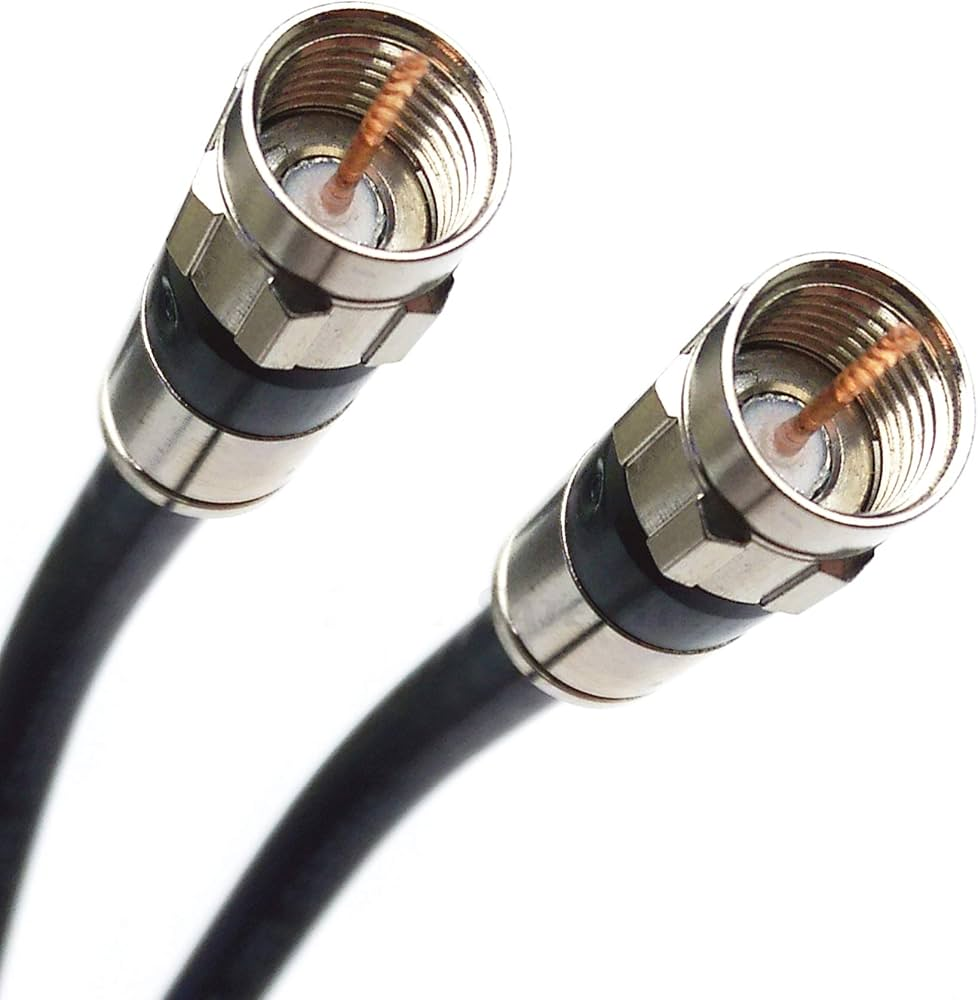
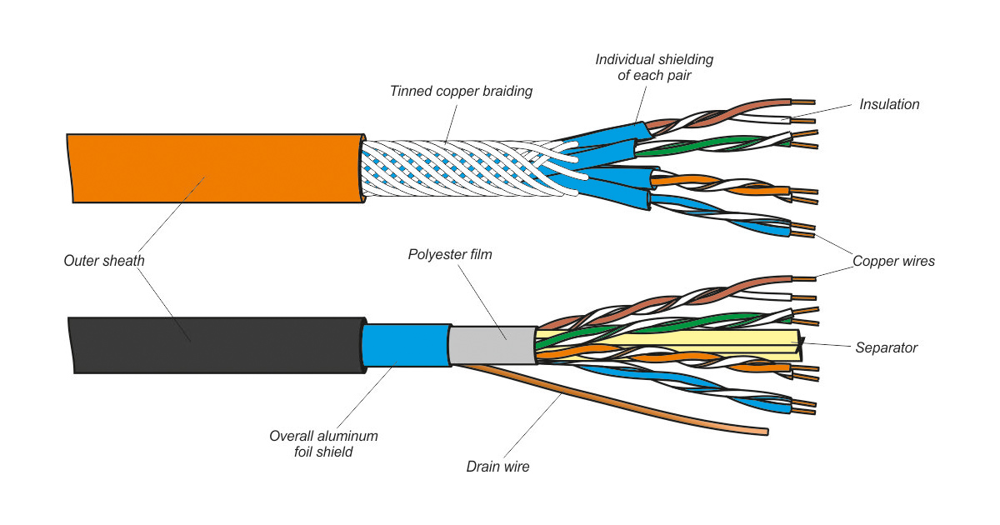

Cables

Cables are essential components in various communication and electrical systems. They transmit signals, data, and power efficiently over distances. Different types of cables are designed for specific applications, offering varying levels of performance, bandwidth, and durability.
Types of Cables
There are several types of cables used in modern technology:
- Optical Fibre Cables: Used for high-speed data transmission over long distances.
- Coaxial Cables: Commonly used in cable television and broadband internet.
- Twisted Pair Cables: Standard for Ethernet networks and telephone lines.
Each type has unique characteristics suited to different needs. Explore the specific pages for more details on each cable type.
Cable Images


